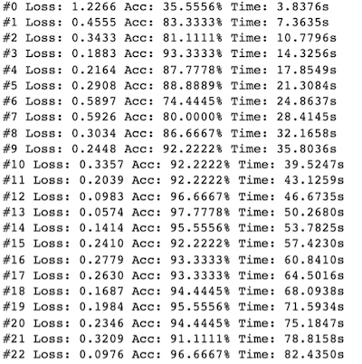

구현 기능

|
이미지 자동 정리 기능 학습된 모델을 통해서 이미지를 자동으로 폴더에 분류할 수 있습니다. |
|  |
이미지 학습 기능 학습된 모델을 생성하기 위해 주어진 이미지를 사전에 학습합니다. |
사회에 기여하려고 한 점
이미지 분류 모델만 생성하면 자동으로 사진 정리를 해주므로 사진을 하나하나씩 확인해서 분류할 필요가 없습니다.
이미지 분류 모델만 생성하면 자동으로 사진 정리를 해주므로 사진을 하나하나씩 확인해서 분류할 필요가 없습니다.
배경과 목적
사진을 하나하나씩 확인해서 분류하는 것이 매우 귀찮습니다. 그래서 이미지 분류 모델을 이용해 자동으로 정리해주는 프로그램을 구현하였습니다.
사진을 하나하나씩 확인해서 분류하는 것이 매우 귀찮습니다. 그래서 이미지 분류 모델을 이용해 자동으로 정리해주는 프로그램을 구현하였습니다.
배운 점
- Jupyter Notebook에서 학습된 모델을 생성하는 법을 알게 되었습니다.
- Flask로 서버를 구축해서 HTTP POST 요청을 처리하는 법을 알게 되었습니다.
- Python에서 Command 또는 Terminal 명령을 실행하는 법을 알게 되었습니다.
진행 절차
- ’마동석/김종국/이병헌 분류기’ 소스 코드를 다운받았습니다.
- 웹에서 이미지를 다운받는 방식에서 본인이 직접 이미지를 업로드하는 방식으로 수정하였습니다.
- Flask를 사용하므로 이미지 분류 모델이 만들어지면 링크가 생성됩니다. 따라서 해당 링크에 HTTP POST로 이미지를 보내면 전송한 이미지가 어느 클래스에 속하는지 응답을 받게됩니다. 이 링크를 활용해서 바탕화면의 이미지가 분류되도록 할 것이므로 Python 프로그램을 따로 만들었습니다.
- Python에서 Command 또는 Terminal 명령을 실행하는 법, 폴더가 없을 때 폴더 생성하는 법, 파일 목록 불러오는 법을 몰라서 구글에서 전부 찾았습니다.
- 이렇게 해서 원하는 프로그램을 구현할 수 있었습니다.
역량 강화를 위해 가장 노력한 점
Jupyter Notebook에서 구현된 기존 프로그램 분석 및 새로운 프로그램으로 재구현
Jupyter Notebook에서 구현된 기존 프로그램 분석 및 새로운 프로그램으로 재구현
전체 구조

사용 기술
Jupyter Notebook, Flask
Jupyter Notebook, Flask
개발 환경
Colab, Python IDLE
Colab, Python IDLE
부연 설명